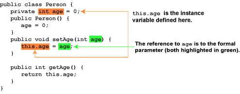

As with class methods, many issues exist when using instance methods. Once again, these can be complex and can require many years of Java programming to comprehend fully. In this section, however, we will cover only the this object.
In Java, it is possible to give a variable local to a method the same name as a class variable. This use of the same name is called shadowing a variable. In setter methods, it is a common practice in Java to shadow the instance variable name with the name of the parameter. The problem then is how to refer to the instance variable in a method where a parameter has shadowed the instance variable name.
You can access a shadowed instance variable name in a method by using a special object name, this. The this object is accessible in every instance method, and it refers to the object that was used to call the method. For example, we could write a Person class with a setAge method using the this object in the setter method as shown in figure 5.V-1.
Figure 5.V-1
Shadowing an Instance Variable

The instance variable age is now referred to by the name this.age, which means the program will use the instance variable age of the this object (the object used when this method was called). The variable age (with no qualifier) is the parameter age.
This new Person class can be used to create a number of different objects, as in the following main method.
public static void main(String args[]) {
Person tom = new Person();
Person jane = new Person();
tom.setAge(40);
jane.setAge(29);
}
In this main method, two objects are created, one named tom and the other jane. When the setAge method is called using the tom object, e.g.,
tom.setAge(40);
the this object in the setAge method refers to the tom object.
When the setAge method is called using the jane object, e.g.,
jane.setAge(29);
the this object refers to the jane object.
In Java, every instance variable in every instance method accesses the this object. Note that in the Person object above, the getAge method uses the this object to return the age.
In the getAge method, the this object is not needed because an instance variable that is not qualified by an object is assumed to use the this object, and Java inserts the this reference for you automatically.
Although the use of shadowing of instance variables is common in Java, some programmers do not like it, believing no use of shadowing variables is ever justified. In fact, most Java programmers would agree that any use of shadowing except in setter methods or constructors is a bad practice.
Many Java programming shops use shadowing in setter and constructor methods, and this use of shadowing is often a standard that programmers are expected to follow. Regardless, shadowing variables in setter methods and constructors is a prevalent practice, used by the majority of Java programmers, and so you should be aware of what shadowing is and know how to use it.